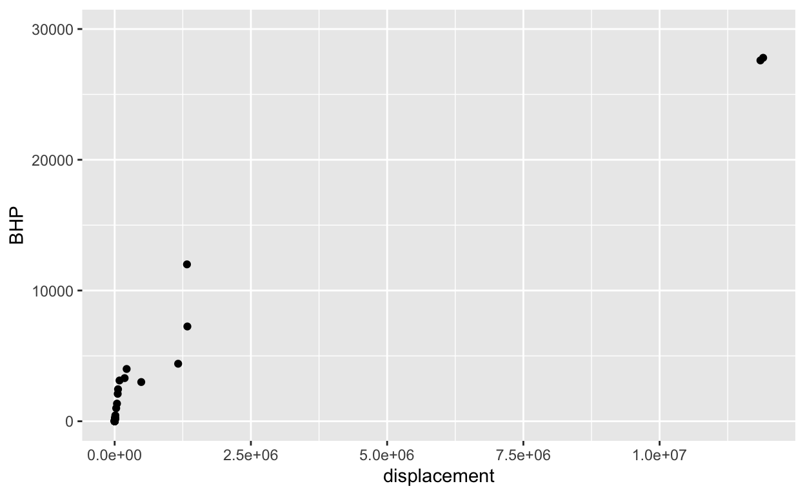

These three expressions
\[e^{kt}\ \ \ \ \ 10^{t/d} \ \ \ \ \ 2^{t/h}\]
produce the same value if \(k\), \(d\) and \(h\) have corresponding numerical values.
The code sandbox below has an expression for plotting out \(2^{t/h}\) for \(-4 \leq t \leq 12\) where \(h = 4\). It also plots out \(e^{kt}\) and \(10^{t/d}\)
fa <- makeFun(2^(t/h) ~ t, h = 4)
fb <- makeFun(10^(t/d) ~ t, d = 10)
fc <- makeFun(exp(k*t) ~ t, k = 0.1)
slice_plot(fa(t) ~ t, domain(t = c(-4, 12))) %>%
slice_plot(fb(t) ~ t, color="blue") %>%
slice_plot(fc(t) ~ t, color = "red") %>%
gf_lims(y = c(0, 8))Your task is to modify the values of d and k such that all three curves lie on top of one another. (Leave h at the value 4.) You can find the appropriate values of d and k to accomplish this by any means you like, say, by using the algebra of exponents or by using trial and error. (Trial and error is a perfectly valid strategy regardless of what your high-school math teachers might have said about “guess and check.” The trick is to make each new guess systematically based on your previous ones and observation of how those previous ones performed.)
After you have found values of k and d that are suited to the task …
Here is a plot of the power output (BHP) versus displacement (in cc) of 39 internal combustion engines.

The next command will make a graph of the same engine data as before, but with a log scale on the horizontal axis. The vertical axis is still linear. (Just press run. You don’t need to change anything.)
gf_point(BHP ~ displacement, data = Engines) %>%
gf_refine(scale_x_log10())In order to make a graph with log-log scales, we refine the graph with both scale_y_log10() and scale_x_log10(), as in the following …
gf_point(BHP ~ displacement, data = Engines) %>%
gf_refine(scale_x_log10(), scale_y_log10())Based on the log-log plot, answer these questions.
This question refers to the graphs labelled 45 to 50 on p. 88 of the MMAC textbook.
For each of the graphs, make a rough but reasonable copy of the graph on your homework paper. Use the horizontal line test to determine if the function has an inverse.
If so, sketch the inverse (roughly, but reasonably) next to the original graph.
If not, circle or otherwise indicate the features of the function that cause it not to have a inverse.
(Note: In these graphs and many throughout the MMAC textbook, the scales of the graph are not labeled. This is a poor practice. Scales should always be labeled to indicate what quantity they represent. There’s nothing you can do about it here, since the book doesn’t provide the necessary information. But be aware of this bad practice when you encounter it and try to avoid it in your professional work.)
Location: CalcZ/_DailyDigitals/DailyDocuments/inst/141Z-Daily-digitals/DD-141Z-04/DD-141Z-04.Rmd 141Z-DD04